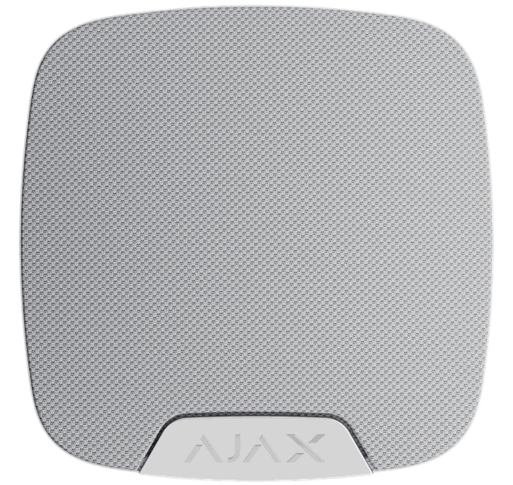
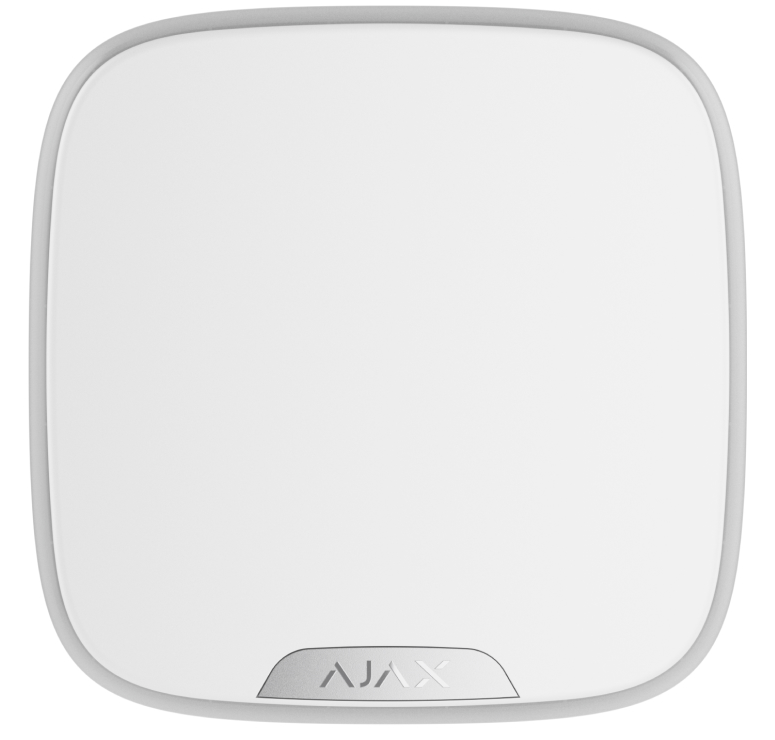
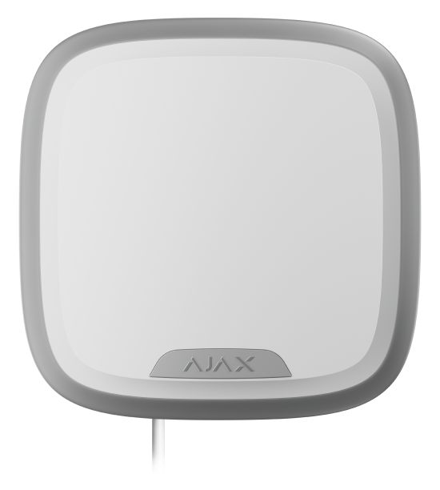

Superior HomeSiren G3 Jeweller
Sirènes
Réf. fabricant HS.G3.J · Ajax Systems, marque partenaire
Sur devisÉtude, fourniture et installation par Active Sécurité 974
Sirène sans fil avec protection anti-sabotage de pointe et un connecteur LED
- Communication : sans fil
- Étude et devis gratuits, sans engagement
- Installation chez vous, partout à La Réunion
- Partenaire agréé Ajax Systems
Caractéristiques
En bref.
Source : Ajax Systems
| Modèle | Superior HomeSiren G3 Jeweller |
|---|---|
| Référence fabricant | HS.G3.J |
| Gamme | Superior |
| Type | Sirènes |
| Points clés |
|
| Coloris officiels | Noir, Blanc |
| Prix | Sur devis |
| Disponibilité | Précisée dans le devis |
Dans la même famille
Autres produits.




